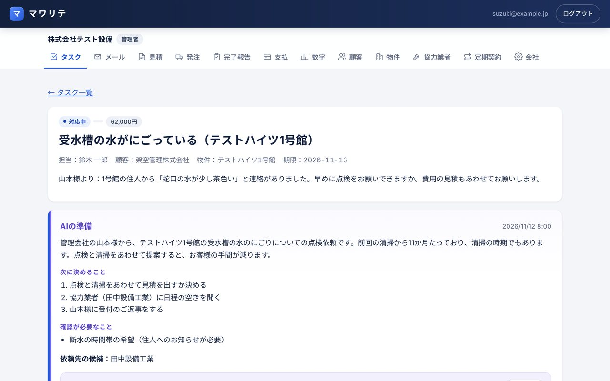
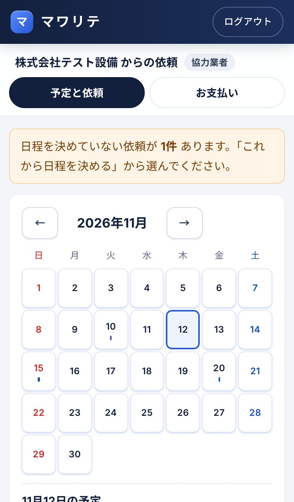
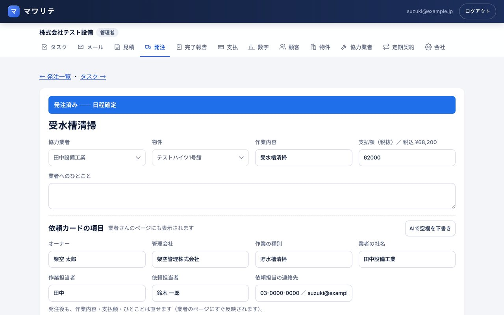
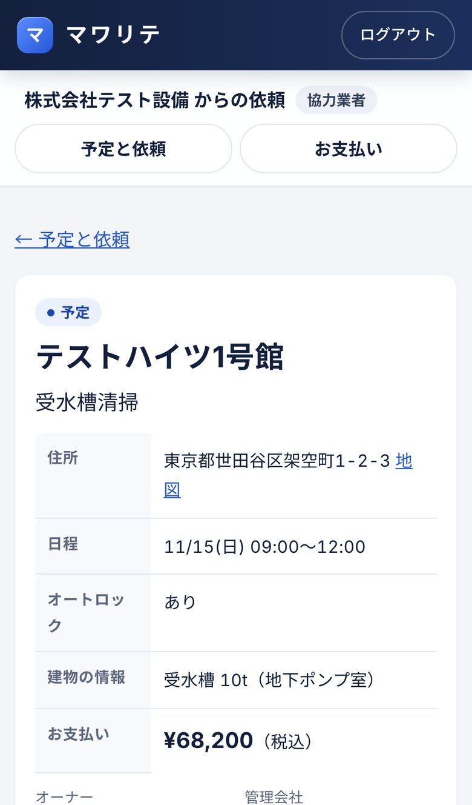
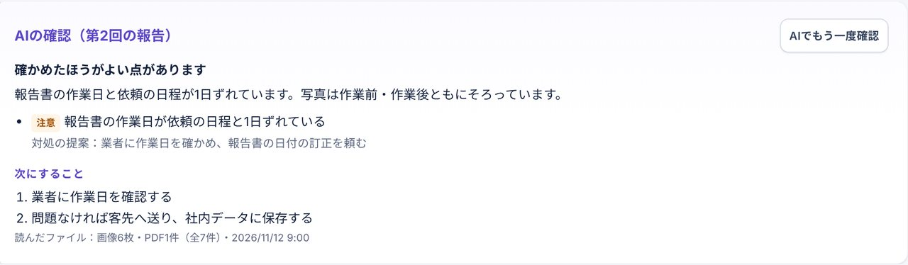

ホーム ／ マワリテ
メールが届いたら、AIが先回り。
「マワリテ」は、お客様からのメールをAIが読み、見積・協力業者への依頼・返信の下書きまでそろえておくシステムです。社員は中身を確かめて「これでいこう」と決めるだけ。業者さんとの日程・完了報告・お支払いの確認も、スマホでつながります。
はじめ 38.5万円〜＋月 6万円（税込）Outlook（Microsoft 365）のまま使える業者さんは アプリのインストール不要パソコン・スマホ


PROBLEM
こんなこと、ありませんか？
メールが多くて、返事や見積が後回しになる
届いたメールは 自動でタスク に。AIが要点・次にやること・返信の下書きを用意して待っています。
業者さんとの日程調整が電話とFAXの往復
依頼を出すと業者さんのスマホに 通知とメール。日程は業者さんが画面で決め、こちらのカレンダーにも入ります。
完了報告の確認と、お客様への送付がたまる
報告書と写真は AIが先に確認。不足があれば対処を提案し、業者さんに再報告を頼めます。
月末、業者さんへの支払いの集計に追われる
作業の金額は 月ごとに自動で集計。業者さんも自分のページで内訳を確認できます。
HOW IT WORKS
メール1通から、支払いまで。
マワリテは「AIが準備して、人が決める」のくり返しです。だれが何をするかを色で分けました。
- AIメールを読んでタスクにお客様・物件を見分け、要点と次にやることをまとめます
- AI見積と返信を下書き過去の見積や単価をもとに、見積・返信・業者への依頼文を用意
- 社員確かめて決める直して「これでいこう」。金額によって上司の承認にも回せます
- 業者スマホで日程と報告依頼が届いたら日程を決め、作業後は写真と報告書を送るだけ
- AI社員確認して客先へAIが報告書を確認、社員が客先へ送付。支払いは月ごとに集計
FEATURES
画面で見る、マワリテ
画面の内容はすべて架空のデータです。
01 ／ 社員専属のAI
届いたメールは、準備ができた状態で待っている
Outlookに届いたお客様のメールを、AIがその場で読みます。誰からの、どの物件の、何の話かを整理して、次に決めることと返信の下書きをタスクに添えておきます。
- 電話・対面・社内の依頼・定期契約からもタスクに
- 「もう少し丁寧に」など、ことばでAIに指示できる
- 担当の振り分け・上司への承認もタスクの中で
02 ／ 発注カード
業者さんへの依頼は、カード1枚で
見積から発注カードを作ると、オーナー・管理会社・作業の種別・担当者などの項目はAIが下書きします。「正式発注」を押せば、業者さんのページに表示され、お知らせのメールと通知が届きます。
- 物件の情報（オートロックなど）を業者さんに共有
- 鍵の番号などは作業日の前後だけ表示し、見た記録を残す
- 決まった日程は業者さんのGoogleカレンダーにも入る

03 ／ 協力業者のページ
業者さんは、スマホひとつで
業者さんには、招待のメールを送るだけ。メールアドレスとパスワードを決めれば、すぐに使えます。アプリストアからのインストールは不要で、ホーム画面に置けばアプリのように開けます。
- 依頼が来ると通知。アイコンに未対応の件数
- カレンダーで予定を確認、日程は画面で決める
- 月ごとのお支払いの内訳を確認、CSV・PDFで保存

04 ／ 完了報告
報告書は、AIが先に目を通す
業者さんが写真と報告書を送ると、担当者に「完了報告の確認」タスクが上がります。AIが中身を読み、日付のずれや写真の不足など気になる点と、その対処を提案します。
- 不足があれば、理由をつけて業者さんに再報告を依頼
- 問題なければ、報告書を添えて客先へ送付
- 決めたフォルダのルールで、社内データに保存

TRUST
AIは準備まで。決めるのは人。
お客様や業者さんとのやりとりは、会社の信用そのものです。マワリテは、大事なところを必ず人の手に残す作りにしています。
勝手に送らない
メールの送信・発注・承認は、すべて社員がボタンを押してから。AIの下書きは、自由に直せます。
見せる情報をしぼる
業者さんに見えるのは、自分への依頼だけ。鍵や口座の番号は必要なときだけ表示し、見た記録が残ります。
いつもの道具のまま
メールは今のOutlookのまま。保存先のフォルダも、会社で決めた場所とルールにそろえられます。
START
導入の進め方
- お話をうかがう今の仕事の流れ、使っている書式やメールを教えてください
- 画面で確かめる御社の書式・ことばに合わせた画面を、触って確かめられます
- 少しずつ始めるまずは社員数名と、よく頼む業者さんから
- 使いながら直す月々の保守の中で、使いにくいところを直していきます
はじめ 385,000円〜 ＋ 月 60,000円
月額には、社員10名までの利用、協力業者は何社でも、AIの利用料、保守と使いながらの手直しが含まれます。11人目からは1人につき月3,300円。はじめの費用には、顧客・物件・業者の取り込み、Outlookとの連携、見積書などの書式の設定、使い方のご説明が含まれます。月額はいつでも解約でき、解約にお金はかかりません。FAQ
よくあるご質問
今のOutlookのメールアドレスのまま使えますか？
使えます。社員それぞれがMicrosoftのアカウントでマワリテとつなぐと、届いたメールがタスクになり、マワリテからの送信も本人のOutlookから送られます。
AIが間違ったことを書いたら？
AIが作るのは下書きと提案だけで、送る・決めるのは社員です。下書きは自由に直せますし、「この業者さんにも聞いて」のように、ことばで指示し直すこともできます。
協力業者さんは、何か準備が必要ですか？
スマホかパソコンと、メールアドレスがあれば大丈夫です。招待のメールからパスワードを決めるだけで使えます。アプリストアからのインストールはいりません。
AIの利用料は別にかかりますか？
かかりません。月額60,000円にAIの利用料も含まれています。メールが多い月も、料金が増えることはありません。
パソコンが苦手な社員でも使えますか？
ボタンや言葉はできるだけ現場で使うことばにしています。導入のときに、御社の仕事の流れに合わせて画面や言葉を調整します。
今の見積書・請求書の書式は使えますか？
Excelの書式を読み込んで使えます。メールの署名も、担当者ごとに設定できます。
まずは画面を見ながら、お話ししませんか
マワリテは、ビルメンテナンスの現場に10年以上たずさわってきた Sun'sCreate が、自分たちの困りごとから作りました。御社の流れに合うかどうか、実際の画面でご覧いただけます。